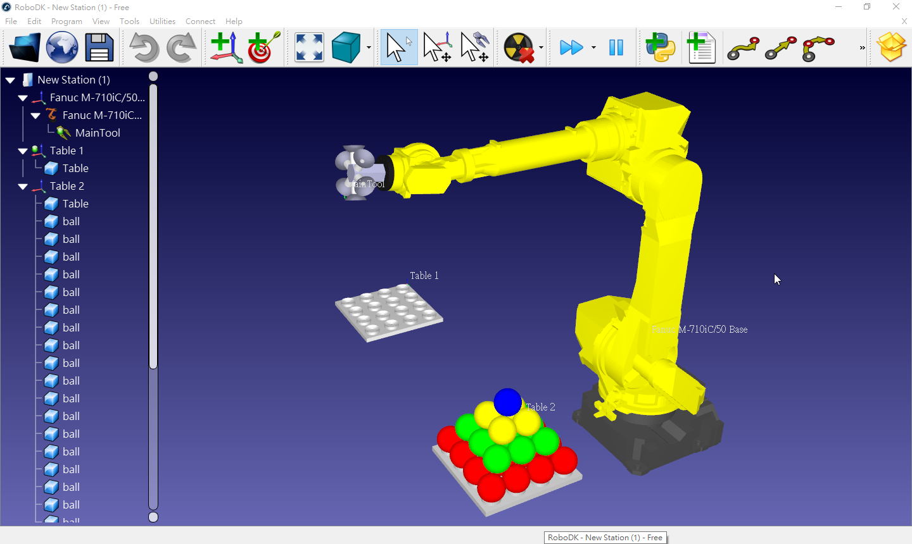

Lua <<
Previous Next >> 學號抽點
RoboDK
利用 RoboDK Free 版本學習 Python:
下載 RoboDK 免費版本 (無存檔功能) 的可攜程式套件後, 就可以利用 Python 3.9 控制模擬環境中的 Robot. 從中學習如何應用 Python 於自動化製造流程.
http://a.kmol.info:88/kmol2021_spring_v4_robodk.7z (下載可攜 RoboDK)
pidk_and_place.7z (Python 3.9.2 for RoboDK 5.2.2)
https://robodk.com/Python-API-examples
6-axis-serial-robot-2.pdf
https://github.com/zenetio/RoboND-Kinematics-Project
https://github.com/lanius/tinyik
https://github.com/Phylliade/ikpy
利用 Python 開啟 RoboDK, 加入六軸機械臂以及其他 stl 零組件:
from robodk import *
from robolink import *
# Connect to the RoboDK API
RDK = Robolink(robodk_path="C:/robodk522_portable/bin/RoboDK.exe", args=["-NEWINSTANCE", "-SKIPINI", "-EXIT_LAST_COM"])
# Add a reference frame
RDK.AddFrame("參考座標")
# Add robot
robot = RDK.AddFile(r'C:/robodk522_portable/Library/ABB-IRB-120-3-0-6.robot')
# Add stl object
for i in range(500):
item = RDK.AddFile(r'C:/tmp/untitled.stl')
# set Pose for item
item.setPose(rotz(pi/2*i/6)*rotx(pi/5)*transl(200,50*i,900))
# Retrieve all items and print their names (just a reference frame)
list_items = RDK.ItemList()
for item in list_items:
print(item.Name())
# Close RoboDK
#RDK.CloseRoboDK()
利用 Python 程式控制六軸機械臂繪製特定幾何圖形:
# Draw a hexagon around Target 1
from robolink import * # RoboDK's API
from robodk import * # Math toolbox for robots
# Start the RoboDK API:
RDK = Robolink()
# Get the robot (first robot found):
robot = RDK.Item('', ITEM_TYPE_ROBOT)
# Get the reference target by name:
target = RDK.Item('Target 1')
target_pose = target.Pose()
xyz_ref = target_pose.Pos()
# Move the robot to the reference point:
robot.MoveJ(target)
# Draw a hexagon around the reference target:
for i in range(7):
ang = i*2*pi/6 # Angle = 0,60,120,...,360
R = 200 # Polygon radius
# Calculate the new position:
x = xyz_ref[0] + R*cos(ang) # new X coordinate
y = xyz_ref[1] + R*sin(ang) # new Y coordinate
z = xyz_ref[2] # new Z coordinate
target_pose.setPos([x,y,z])
# Move to the new target:
robot.MoveL(target_pose)
# Trigger a program call at the end of the movement
robot.RunInstruction('Program_Done')
# Move back to the reference target:
robot.MoveL(target)
Pick Object:
# This macro shows how to generate a station event to pick a specific object with a specific tool
# Using a macro like this one is an alternative to the Event instruction.
# By default, the Event instruction in RoboDK picks the closest object within a certain distance
# Set the tool to use as a gripper
TOOL_NAME = 'Tool Gripper'
# Set the object to pick
OBJECT_PICK = 'Part'
#---------------------------------------------------
# Start the RoboDK API
from robolink import *
RDK = Robolink()
# Select the tool and object, then, grab it
tool = RDK.Item(TOOL_NAME, ITEM_TYPE_TOOL)
obj = RDK.Item(OBJECT_PICK, ITEM_TYPE_OBJECT)
# Maintain the absolute position of the object
obj.setParentStatic(tool)
# Keep the relative position of the object (existing relationship)
#obj.setParent(tool)
# Example to set the relative position
#obj.setPose(transl(0,0,0)*rotz(pi))
# Example to set the absolute position
#obj.setPoseAbs(transl(0,0,0)*rotz(pi))
將圓球排列為 square pyramid (四角錐), 底部計有 4*4 16 個圓球, 第二層則有 3*3 9 個圓球, 第三層則有 2*2 4 個圓球, 最上層則有一個圓球, 總計 16 + 9 + 4+ 1, 共有 30 個圓球. 利用 FANUC M-710iC/50 機械手臂 (最大負荷 50 KG (FANUC_robot_M-710iC_zh-cn.pdf, FANUC_robot_M-710iC_en.pdf, Datasheet M-710iC-50.pdf), 從 Table 1 將圓球逐一吸附, 搬移至 Table 2.
pick and place.py
# KMOLab Portable RoboDK pick and place
from robolink import * # API to communicate with robodk
from robodk import * # robodk robotics toolbox
# Setup global parameters
BALL_DIAMETER = 100 # diameter of one ball
APPROACH = 100 # approach distance to grab each part, in mm
nTCPs = 6 # number of TCP's in the tool
#----------------------------------------------
# Function definitions
def box_calc(BALLS_SIDE=4, BALLS_MAX=None):
"""Calculate a list of points (ball center) as if the balls were stored in a box"""
if BALLS_MAX is None: BALLS_MAX = BALLS_SIDE**3
xyz_list = []
for h in range(BALLS_SIDE):
for i in range(BALLS_SIDE):
for j in range(BALLS_SIDE):
xyz_list = xyz_list + [[(i+0.5)*BALL_DIAMETER, (j+0.5)*BALL_DIAMETER, (h+0.5)*BALL_DIAMETER]]
if len(xyz_list) >= BALLS_MAX:
return xyz_list
return xyz_list
def pyramid_calc(BALLS_SIDE=4):
"""Calculate a list of points (ball center) as if the balls were place in a pyramid"""
#the number of balls can be calculated as: int(BALLS_SIDE*(BALLS_SIDE+1)*(2*BALLS_SIDE+1)/6)
BALL_DIAMETER = 100
xyz_list = []
sqrt2 = 2**(0.5)
for h in range(BALLS_SIDE):
for i in range(BALLS_SIDE-h):
for j in range(BALLS_SIDE-h):
height = h*BALL_DIAMETER/sqrt2 + BALL_DIAMETER/2
xyz_list = xyz_list + [[i*BALL_DIAMETER + (h+1)*BALL_DIAMETER*0.5, j*BALL_DIAMETER + (h+1)*BALL_DIAMETER*0.5, height]]
return xyz_list
def balls_setup(frame, positions):
"""Place a list of balls in a reference frame. The reference object (ball) must have been previously copied to the clipboard."""
nballs = len(positions)
step = 1.0/(nballs - 1)
for i in range(nballs):
newball = frame.Paste()
newball.setName('ball ' + str(i)) #set item name
newball.setPose(transl(positions[i])) #set item position with respect to parent
newball.setVisible(True, False) #make item visible but hide the reference frame
newball.Recolor([1-step*i, step*i, 0.2, 1]) #set RGBA color
def cleanup_balls(parentnodes):
"""Delete all child items whose name starts with \"ball\", from the provided list of parent items."""
todelete = []
for item in parentnodes:
todelete = todelete + item.Childs()
for item in todelete:
if item.Name().startswith('ball'):
item.Delete()
def TCP_On(toolitem, tcp_id):
"""Attach the closest object to the toolitem Htool pose,
furthermore, it will output appropriate function calls on the generated robot program (call to TCP_On)"""
toolitem.AttachClosest()
toolitem.RDK().RunMessage('Set air valve %i on' % (tcp_id+1))
toolitem.RDK().RunProgram('TCP_On(%i)' % (tcp_id+1));
def TCP_Off(toolitem, tcp_id, itemleave=0):
"""Detaches the closest object attached to the toolitem Htool pose,
furthermore, it will output appropriate function calls on the generated robot program (call to TCP_Off)"""
toolitem.DetachAll(itemleave)
toolitem.RDK().RunMessage('Set air valve %i off' % (tcp_id+1))
toolitem.RDK().RunProgram('TCP_Off(%i)' % (tcp_id+1));
#----------------------------------------------------------
# The program starts here:
# Any interaction with RoboDK must be done through RDK:
RDK = Robolink()
# Turn off automatic rendering (faster)
RDK.Render(False)
#RDK.Set_Simulation_Speed(500); # set the simulation speed
# Gather required items from the station tree
robot = RDK.Item('Fanuc M-710iC/50')
robot_tools = robot.Childs()
#robottool = RDK.Item('MainTool')
frame1 = RDK.Item('Table 1')
frame2 = RDK.Item('Table 2')
# Copy a ball as an object (same as CTRL+C)
ballref = RDK.Item('reference ball')
ballref.Copy()
# Run a pre-defined station program (in RoboDK) to replace the two tables
prog_reset = RDK.Item('Replace objects')
prog_reset.RunProgram()
# Call custom procedure to remove old objects
cleanup_balls([frame1, frame2])
# Make a list of positions to place the objects
frame1_list = pyramid_calc(4)
frame2_list = pyramid_calc(4)
# Programmatically place the objects with a custom-made procedure
balls_setup(frame1, frame1_list)
# Delete previously generated tools
for tool in robot_tools:
if tool.Name().startswith('TCP'):
tool.Delete()
# Calculate tool frames for the suction cup tool of 6 suction cups
TCP_list = []
for i in range(nTCPs):
TCPi_pose = transl(0,0,100)*rotz((360/nTCPs)*i*pi/180)*transl(125,0,0)*roty(pi/2)
TCPi = robot.AddTool(TCPi_pose, 'TCP %i' % (i+1))
TCP_list.append(TCPi)
TCP_0 = TCP_list[0]
# Turn on automatic rendering
RDK.Render(True)
# Move balls
robot.setPoseTool(TCP_list[0])
nballs_frame1 = len(frame1_list)
nballs_frame2 = len(frame2_list)
idTake = nballs_frame1 - 1
idLeave = 0
idTCP = 0
target_app_frame = transl(2*BALL_DIAMETER, 2*BALL_DIAMETER, 4*BALL_DIAMETER)*roty(pi)*transl(0,0,-APPROACH)
while idTake >= 0:
# ------------------------------------------------------------------
# first priority: grab as many balls as possible
# the tool is empty at this point, so take as many balls as possible (up to a maximum of 6 -> nTCPs)
ntake = min(nTCPs, idTake + 1)
# approach to frame 1
robot.setPoseFrame(frame1)
robot.setPoseTool(TCP_0)
robot.MoveJ([0,0,0,0,10,-200])
robot.MoveJ(target_app_frame)
# grab ntake balls from frame 1
for i in range(ntake):
TCPi = TCP_list[i]
robot.setPoseTool(TCPi)
# calculate target wrt frame1: rotation about Y is needed since Z and X axis are inverted
target = transl(frame1_list[idTake])*roty(pi)*rotx(30*pi/180)
target_app = target*transl(0,0,-APPROACH)
idTake = idTake - 1
robot.MoveL(target_app)
robot.MoveL(target)
TCP_On(TCPi, i)
robot.MoveL(target_app)
# ------------------------------------------------------------------
# second priority: unload the tool
# approach to frame 2 and place the tool balls into table 2
robot.setPoseTool(TCP_0)
robot.MoveJ(target_app_frame)
robot.MoveJ([0,0,0,0,10,-200])
robot.setPoseFrame(frame2)
robot.MoveJ(target_app_frame)
for i in range(ntake):
TCPi = TCP_list[i]
robot.setPoseTool(TCPi)
if idLeave > nballs_frame2-1:
raise Exception("No room left to place objects in Table 2")
# calculate target wrt frame1: rotation of 180 about Y is needed since Z and X axis are inverted
target = transl(frame2_list[idLeave])*roty(pi)*rotx(30*pi/180)
target_app = target*transl(0,0,-APPROACH)
idLeave = idLeave + 1
robot.MoveL(target_app)
robot.MoveL(target)
TCP_Off(TCPi, i, frame2)
robot.MoveL(target_app)
robot.MoveJ(target_app_frame)
# Move home when the robot finishes
robot.MoveJ([0,0,0,0,10,-200])
完全利用 Python API 方式建立上例 Pick and Place Station, 並將圓球重複由 Table 1 搬移至 Table 2 後, 再由 Table 2 搬回 Table1, 或再設法建立 Table 3 與 Table 4, 讓 FANUC M-710iC/50 機械手臂, 在四張 Table 間重複圓球搬運工作 (尚未完成).
pick and place in Python API
from robolink import *
from robodk import *
# Calculate pyramid coordinate
def pyramid_calc(BALLS_SIDE=4):
"""Calculate a list of points (ball center) as if the balls were place in a pyramid"""
#the number of balls can be calculated as: int(BALLS_SIDE*(BALLS_SIDE+1)*(2*BALLS_SIDE+1)/6)
BALL_DIAMETER = 100
xyz_list = []
sqrt2 = 2**(0.5)
for h in range(BALLS_SIDE):
for i in range(BALLS_SIDE-h):
for j in range(BALLS_SIDE-h):
height = h*BALL_DIAMETER/sqrt2 + BALL_DIAMETER/2
xyz_list = xyz_list + [[i*BALL_DIAMETER + (h+1)*BALL_DIAMETER*0.5, j*BALL_DIAMETER + (h+1)*BALL_DIAMETER*0.5, height]]
return xyz_list
# Make a list of positions to place the objects
balls_list = pyramid_calc(4)
#print(len(frame1_list))
# 4*4 = 16
# 3*3 = 9
# 2*2 = 4
# 1+4+9+16 = 30
# height 50*sqrt(2)
'''
[
[50.0, 50.0, 50.0], [50.0, 150.0, 50.0], [50.0, 250.0, 50.0], [50.0, 350.0, 50.0],
[150.0, 50.0, 50.0], [150.0, 150.0, 50.0], [150.0, 250.0, 50.0], [150.0, 350.0, 50.0],
[250.0, 50.0, 50.0], [250.0, 150.0, 50.0], [250.0, 250.0, 50.0], [250.0, 350.0, 50.0],
[350.0, 50.0, 50.0], [350.0, 150.0, 50.0], [350.0, 250.0, 50.0], [350.0, 350.0, 50.0],
[100.0, 100.0, 120.71067811865474], [100.0, 200.0, 120.71067811865474], [100.0, 300.0, 120.71067811865474],
[200.0, 100.0, 120.71067811865474], [200.0, 200.0, 120.71067811865474], [200.0, 300.0, 120.71067811865474],
[300.0, 100.0, 120.71067811865474], [300.0, 200.0, 120.71067811865474], [300.0, 300.0, 120.71067811865474],
[150.0, 150.0, 191.42135623730948], [150.0, 250.0, 191.42135623730948],
[250.0, 150.0, 191.42135623730948], [250.0, 250.0, 191.42135623730948],
[200.0, 200.0, 262.13203435596427]
]
'''
# https://github.com/RoboDK/RoboDK-API/blob/master/Python/robolink.py
# robodk_path variable to specify location of RoboDK.exe
RDK = Robolink(args=["-NEWINSTANCE", "-SKIPINI", "-EXIT_LAST_COM"])
# Add robot and the accompanied Base coordinate
robot = RDK.AddFile('Fanuc-M-710iC-50.robot')
# Get the default robot base frame
robot_frame = RDK.Item('Fanuc M-710iC/50 Base')
# Move the base frame to the origin
robot_frame.setPose(transl(0,0,0))
# Add a tool to an existing robot:
tool = RDK.AddFile('MainTool.tool', robot)
# Add table 1
table1_frame = RDK.AddFrame('Table 1')
table1_frame.setPose(transl(807.766544,-963.699898,41.478944))
table1_stl = RDK.AddFile('Table.stl', table1_frame)
# Add table 2
table2_frame = RDK.AddFrame('Table 2')
table2_frame.setPose(transl(926.465508,337.151529,94.871928))
table2_stl = RDK.AddFile('Table.stl', table2_frame)
# Add balls
# create a list with 30 elements
balls = [None for _ in range(30)]
layer = [16, 9, 4, 1]
count = 0
for i in range(len(balls_list)):
# transl(balls_list)
balls[i] = RDK.AddFile('ball.stl', table2_frame)
balls[i].setPose(transl(balls_list[i]))
count = count + 1
if count <= 16:
balls[i].setColor([1, 0, 0])
elif count > 16 and count <= 25:
balls[i].setColor([0, 1, 0])
elif count > 25 and count <=29:
balls[i].setColor([1, 1, 0])
else:
balls[i].setColor([0, 0, 1])
上述 Python API 程式若使用可攜 RoboDK, 必須額外在 RDK = Robolink(args=["-NEWINSTANCE", "-SKIPINI", "-EXIT_LAST_COM"]) 利用 robodk_path 宣告 RoboDK.exe 所在位置, 例如: RDK = Robolink(robodk_path = "y:/robodk522/bin/RoboDK.exe", args=["-NEWINSTANCE", "-SKIPINI", "-EXIT_LAST_COM"]). 所完成的 station 畫面如下:

實體 FANUC M710iC/50 機械手臂工作影片:
Lua <<
Previous Next >> 學號抽點